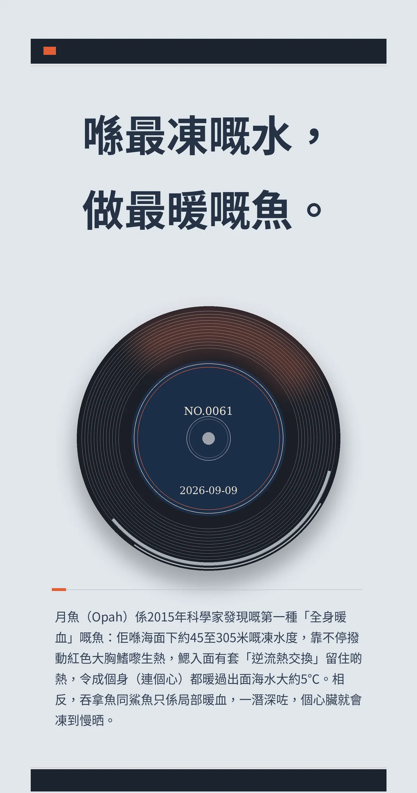

喺最凍嘅水，做最暖嘅魚。
月魚（Opah）係2015年科學家發現嘅第一種「全身暖血」嘅魚：佢喺海面下約45至305米嘅凍水度，靠不停撥動紅色大胸鰭嚟生熱，鰓入面有套「逆流熱交換」留住啲熱，令成個身（連個心）都暖過出面海水大約5℃。相反，吞拿魚同鯊魚只係局部暖血，一潛深咗，個心臟就會凍到慢晒。
a26a7955944dc5c60445bff77fac9c8e2b7d9bda3471dd85冷知识由执笔的模型自行查证。逐条断言、来源与所引原句存档在纯文字副本里，未经程序逐字校验，留作事后核实。